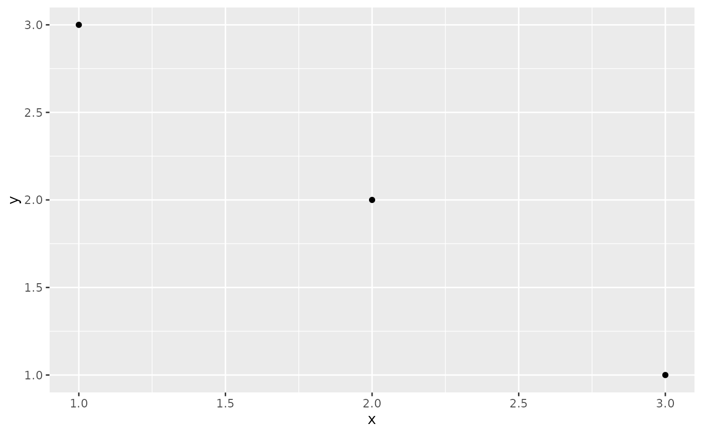
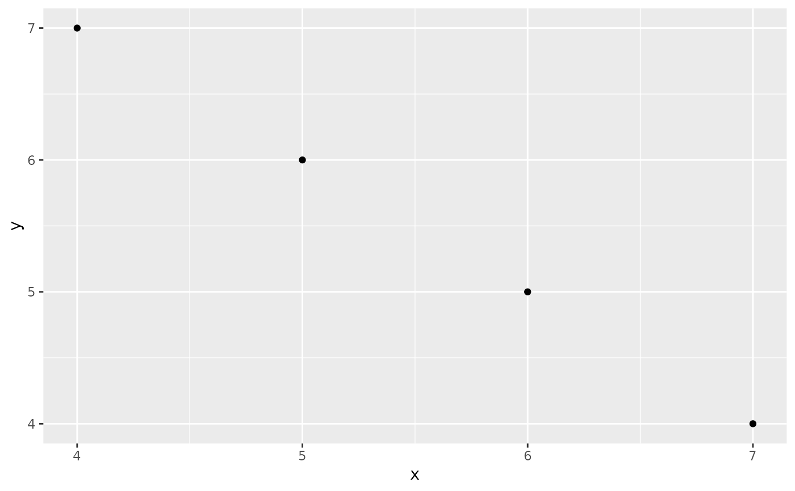

The filename argument may be given with an sprintf() format including
"%d" to allow automatic numbering of the output filenames. Specifically, the
pattern of "%d" with an optional non-negative integer between the "%" and "d"
is searched for and if found, then the filename will be generated using that
sprintf() format. Note that also means that other requirements for
sprintf() must be met; for example, if you want a percent sign ("%") in the
filename, it must be doubled so that sprintf returns what is desired.
Usage
# S3 method for class 'gglist'
knit_print(x, ..., filename = NULL, fig_suffix = "\n\n")
# S3 method for class 'ggtibble'
knit_print(x, ...)Arguments
- x
The gglist object
- ...
extra arguments to
knit_print()- filename
A filename with an optional "%d" sprintf pattern for saving the plots
- fig_suffix
Any text to add after the figure
See also
Other knitters:
knit_print.gg()
Examples
# Ensure that each figure is within its own float area
mydata <-
list(
data.frame(x = 1:3, y = 3:1),
data.frame(x = 4:7, y = 7:4)
)
p <- gglist(mydata, ggplot2::aes(x = x, y = y)) +
ggplot2::geom_point()
knit_print(p, fig_suffix = "\n\n\\FloatBarrier\n\n")
#>
#>

#>
#>
#> \FloatBarrier
#>
#>
#>
#>
#>

#>
#>
#> \FloatBarrier
#>
#>
#>